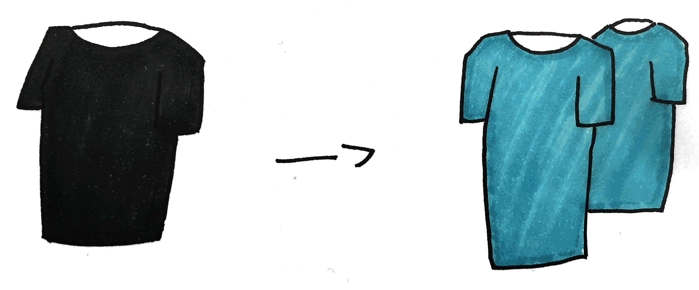

Wearables
In het hoorcollege hebben we gesproken over hoe wearables onze communicatie, onze connectie met onszelf en anderen en de wereld om ons heen verandert. Bedenk een concept waarbij gebruik wordt gemaakt van biometrische data van mensen die in dezelfde ruimte zitten
Assignment
Een T-shirt die van patroon en kleur veranderd, afhankelijk van de biometrische gegevens van een persoon. Daarnaast is het ook mogelijk om tekst te laten zien op het shirt. Ieder individu draagt zo’n shirt en geeft licht een kleur aan. Wanneer er meerdere mensen met dezelfde kleur shirt samenkomen, dan worden de kleuren feller in het shirt. De kleuren kunnen afhangen van bijvoorbeeld het geslacht, lengte, dagelijkse activiteit, etc. Via een programma die werkend is als app en webapplicatie, is het mogelijk om kleuren, patronen en andere reacties te programmeren voor verschillende situaties. Daarnaast is het mogelijk om verschillende data bij te houden afhankelijk van de gekozen data.
Dit concept kan bijvoorbeeld gebruikt worden in groepsactiviteiten, waarbij je de hele groep dezelfde kleur T-shirt kan geven en waarbij iedere individu zijn op het shirt heeft staan. Het werkt met een ingebouwde batterij die heel dun is en niet op te merken is wanneer het shirt gedragen wordt. Daarnaast is het ook mogelijk om het aantal mensen bij te houden door middel van de verzadiging van de kleur of het aantal gekleurde vormen die aanwezig zijn. Op deze manier is het mogelijk om bij te houden of iedereen nog aanwezig is. Daarnaast is het een leuke manier om op te vallen.
Een ander voorbeeld is met spel. Tijdens het spelen kan de kleur van het shirt veranderen afhankelijk van touch, zoals bij spelletjes waarbij kinderen andere kinderen moeten af tikken. Op deze manier is duidelijk onderscheid te maken tussen elkaar wie nog wel en niet in het spel zit. Spelletjes gebaseerd op tijd kunnen ook werken met een delay in de kleurverandering van het shirt bijvoorbeeld, waarbij je in het spel binnen een bepaalde tijd nog iemand kan redden voordat hij/zij af is.

Research
1. Lunavity
Lunavity is een systeem ontworpen om de menselijke capaciteit om te springen te verbeteren. Door middel van mutli-rotor (vergelijkbaar met wat een helikopter gebruikt om de kunne vliegen) die vastgemaakt is aan de rugzak, is het mogelijk om verder en hoger te kunnen springen. Hierdoor ervaart de persoon ook minder zwaartekracht. Het kan bewegen in het algemeen vereenvoudigen en kan mensen met beperkingen helpen met lopen. Een onrealistisch project, maar het leuk wat ik hieraan vond was dat ze een prototype hadden uitgewerkt en dit hadden laten zien op een expo.
2. Wraps wristband headphones
Een oplossing voor oordopjes die altijd in de knoop zitten en die je altijd kwijt bent. Met Wraps kan je op een makkelijke manier oordopjes bij je houden door het om je arm te wikkelen als een armband. Op deze manier raak je je oortjes niet kwijt en raken ze ook niet in de knoop. Enige nadelen die ik online heb gevonden is dat het product qua geluidskwaliteit tegevalt en soms problemen heeft tijdens het afspelen van muziek. Ik vond het idee erachter goed, want dan ben je minder vaak je oortjes kwijt en zitten ze niet meer in de knoop. Aan de andere kant is het niet handig om altijd dit om je pols te dragen, aangezien het de kans heeft om kapot te gaan.
Reflect
What did you think of this topic?
Wearables zie ik als een eerste stap naar een toekomst met technologie zonder scherm. Nu vragen verschillende dingen onze aandacht en dit gebeurt vaak via een scherm, iets wat we zien en bewust van zijn. Wearables geeft de mogelijkheid om onbewust te werk te gaan en vraagt weinig aandacht. Daarnaast kan het net zo goed werken als een apparaat dan veel aandacht vereist.
How do you see applications and the future of this?
Ik zie wearables uiteindelijk multifunctioneel worden, tot het punt dat dit dagelijks door iedereen gedragen wordt. Wearables kunnen bijvoorbeeld uitgebreid worden tot een kledingstuk die je onder je normale kleding kunt dragen. Hij houdt dan je gezondheid bij en heeft verschillende functie voor ondersteuning, zoals een thermo functie.
Did the subject meet your expectations?
Ik heb vaak geen verwachtingen en sta open voor nieuwe ideeën. Ik vind het interessant om te zien waar de technologie nu is en waar het uiteindelijk zal eindigen. Ik heb mogelijk wel visies van hoe het in de toekomst eruit zal komen te zien, maar dit zit niet in de weg van mijn verwachtingen.